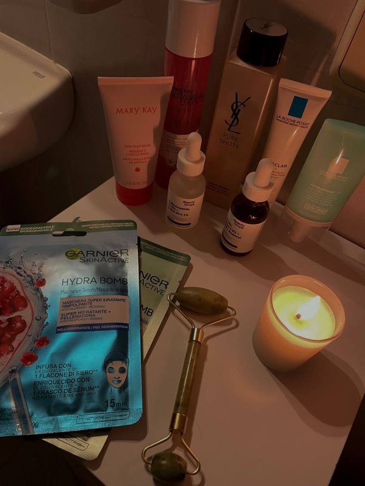
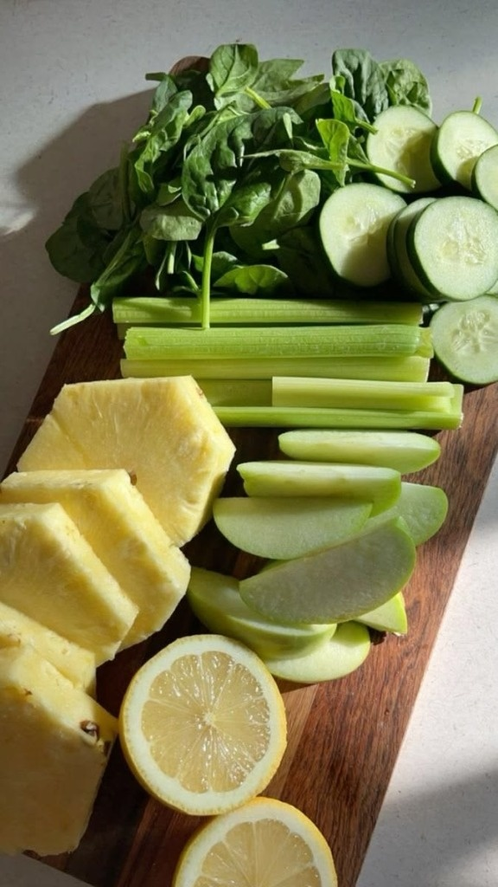

Comprendre la Peau et
Révéler sa Véritable Beauté
Diplômée en Nutrition et Diététique, je suis passionnée par la santé de la peau, la dermocosmétique et le bien-être. J’aime comprendre les besoins des personnes, analyser les problématiques cutanées et proposer des conseils adaptés. Mon objectif est d’offrir une expérience client fondée sur l’écoute, la pédagogie et une vision globale de la beauté.

Écoute Active & Empathie
Identifier le vécu cutané, analyser les sensibilités et construire une recommandation réaliste et personnalisée, sans jugement ni vente forcée.
Pédagogie & Science INCI
Maîtrise rigoureuse des actifs cosmétiques (Niacinamide, AHA/BHA, Vitamine C, Céramides, SPF) et vulgarisation scientifique claire pour le client.
Vision Globale 360°
Compréhension approfondie du lien entre alimentation, équilibre métabolique, gestion du stress et santé globale de la barrière cutanée.
Pourquoi la
Cosmétique ?
Pendant plus de six ans, j’ai souffert d’acné et d’hyperpigmentation, une expérience qui a profondément éveillé mon intérêt pour la cosmétique et la santé de la peau. De nature très curieuse et attentive aux détails, je n’ai jamais voulu appliquer des produits sans comprendre leur mode d’action.
J’ai donc consacré des années à étudier les actifs cosmétiques, les compositions (INCI), la littérature scientifique vulgarisée et les recommandations d’experts afin de comprendre les mécanismes de la peau et de construire une routine adaptée. Mon parcours en Nutrition et Diététique est venu renforcer cette démarche en m’apportant une compréhension du lien entre alimentation, mode de vie, inflammation et santé cutanée.
« Au fil du temps, j’ai construit une routine personnalisée qui a considérablement amélioré l’état de ma peau. Un bon conseil ne consiste pas à vendre un produit, mais à comprendre les besoins de chaque personne. »
Une Expérience Qui A Renforcé
Mes Compétences
Glissez le curseur pour observer l'évolution authentique de ma peau grâce à une routine équilibrée et adaptée.
Ma Vision de la Beauté :
La Peau Ne Se Résume Pas à Une Crème
Grâce à ma formation en Nutrition et Diététique, j’ai développé une approche globale qui prend en compte aussi bien les soins cosmétiques que les facteurs essentiels liés au mode de vie.
L’Alimentation
Impact direct sur la charge glycémique, les acides gras membranaires et la réduction de l'inflammation.
Le Sommeil
Pic de renouvellement cellulaire nocturne et réparation de la barrière cutanée.
Le Stress
Régulation de l'axe peau-cerveau et prévention des poussées inflammatoires induites par le cortisol.
Les Hormones
Prise en compte des variations cycliques sur la sécrétion de sébum et la pigmentation.
L’Hydratation
Apports hydriques réguliers pour maintenir la souplesse et le rebondi de l'épiderme.
L’Environnement
Protection active contre les UV, la pollution et les variations thermiques extérieures.
Habitudes de Vie
Démaquillage doux, régularité et respect scrupuleux du film hydrolipidique.
Dermocosmétique
Je maîtrise les principales familles d’actifs utilisées dans les soins de la peau.
| Actif | Utilisation |
|---|---|
| Niacinamide | Taches, pores, rougeurs |
| Acide azélaïque | Hyperpigmentation |
| Vitamine C | Éclat |
| Rétinoïdes | Renouvellement cellulaire |
| Acide salicylique | Acné |
| Acide glycolique | Exfoliation |
| Céramides | Barrière cutanée |
| Acide hyaluronique | Hydratation |
Formulation & Tolérance
Comprendre la concentration et le pH des formules pour une efficacité maximale sans irriter la peau.

Soutien Interne & Équilibre
Associer les actifs topiques aux micronutriments clés pour réguler le sébum et l'inflammation.
Préservation de la Barrière
Cimenter l'épiderme pour prévenir les pertes hydriques et maintenir une peau souple et résistante.
Constance & Patience
L’application méthodique et régulière des actifs est le garant indispensable d'un résultat durable.
Comment Je Conseille
Un Client
« Avant de recommander un produit, je cherche à comprendre. » Cette démarche me permet d’adapter mes recommandations plutôt que de proposer une solution standardisée.
Protocole d'Analyse en 7 Questions Clés
Sèche, mixte, grasse, normale ou déshydratée en surface.
Acné, hyperpigmentation, rougeurs, manque d'éclat, perte de fermeté.
Historique d'apparition, facteur déclencheur saisonnier ou hormonal.
Inventaire de la routine pour repérer interactions ou sur-exfoliation.
Réactions aux parfums, huiles essentielles, alcool, antécédents atopiques.
Proposer une routine réaliste, accessible et durable dans le temps.
Fixer des objectifs clairs et des paliers de progression concrets.
La Différence Kérène
Plutôt que de pousser un produit à la mode, je co-construis avec le client une routine personnalisée, compréhensible et parfaitement adaptée à son budget.
Ce Que Je Peux Apporter
À Votre Enseigne
Je souhaite offrir à chaque client qui franchit vos portes une expérience mémorable, chaleureuse et hautement professionnelle.
Une écoute attentive
Créer un climat de confiance immédiat où chaque personne se sent comprise et valorisée dans sa singularité.
Des conseils personnalisés
Bâtir des recommandations sur-mesure fondées sur les compositions INCI et les besoins cutanés réels.
Des recommandations adaptées
Sélectionner les gammes les plus pertinentes en respectant scrupuleusement le budget de chaque client.
Une expérience client positive
Transformer le conseil en un moment d’apprentissage rassurant qui génère un fort attachement et de la fidélisation.
Une approche globale 360°
Associer judicieusement dermo-cosmétique, nutrition et hygiène de vie pour maximiser la satisfaction.
Mes Domaines de
Compétences
La synergie de trois domaines complémentaires au service de la beauté.
Conseil Client
- Analyse approfondie des besoins
- Écoute active & empathie
- Pédagogie & communication
- Fidélisation & satisfaction
Dermocosmétique
- Lecture des compositions INCI
- Maîtrise des actifs scientifiques
- Construction de routines sur-mesure
- Santé et barrière de la peau
Nutrition
- Nutrition humaine & micronutrition
- Prévention de l'inflammation
- Bien-être holistique & mode de vie
- Impact cutané des apports nutritionnels